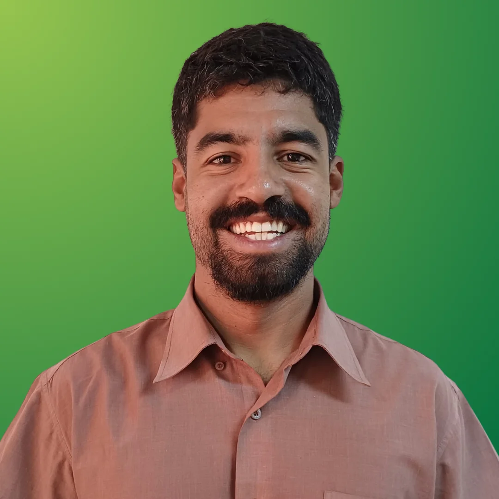

Bolsa de até 70% na
sua pós graduação
Participe gratuitamente da prova de seleção e avance rumo às melhores oportunidades da área ambiental.
O que é a Prova da Bolsa?
A Prova da Bolsa da Ambiental Pro é a sua grande chance de alavancar a carreira na área ambiental pagando muito menos. Disponibilizamos descontos de até 70% na pós graduação sobre o valor integral da pós para os candidatos com melhor desempenho.
A avaliação é 100% online, totalmente gratuita e foi cuidadosamente elaborada para testar seus conhecimentos e reconhecer o seu potencial. Não perca a oportunidade de se especializar nas áreas mais requisitadas do mercado com a chancela da Ambiental Pro e da Anhanguera. Essa é a sua chance de ter um certificado reconhecido pelo MEC e de aprender por profissionais que atuam no mercado, unindo muito conhecimento prático com uma fundamentação teórica profunda.
ATENÇÃO: para se inscrever em uma pós-graduação, é necessário ter concluído a graduação. Caso você ainda não tenha o seu diploma, clique aqui para conhecer nossos cursos de extensão ou entre em contato com a nossa equipe pedagógica para entendermos a sua situação.
Escolha sua Pós-Graduação
Georreferenciamento, Geoprocessamento e Sensoriamento Remoto
Reconhecida pelo CREA, para graduados de qualquer área que desejam atuar na área de Georreferenciamento, Geoprocessamento e Sensoriamento Remoto.
Valor integral: R$ 7.970,00 (sem desconto)
Informações do Curso:
Grade do Curso:
- Geotecnologias aplicadas à área ambiental
- Sensoriamento Remoto e PDI
- Cartografia: Fundamentos e Técnicas
- Referência Espacial e Geodésia
- Topografia aplicada ao georreferenciamento
- Agrimensura legal
- Perícia Ambiental
- Fundamentos de Programação para Ciência de Dados
- Bancos de Dados e Big Data
- WebMaps e Dashboards
- Gerenciamento Estratégico de Projetos
Inteligência de Dados Ambientais
MBA pioneiro focado no desenvolvimento de habilidades práticas, técnicas e gerenciais para se tornar um Especialista em Estratégia de Dados Ambientais.
Valor integral: R$ 11.970,00 (sem desconto)
Informações do Curso:

Grade do Curso:
- Ambiental Trends: Futuring & Negócios
- Fundamentos de Programação para Ciência de Dados
- Inteligência Artificial e Machine Learning
- Bancos de Dados e Big Data no Setor Ambiental
- Geotecnologias aplicadas à área ambiental
- Sensoriamento Remoto e PDI
- Gestão de Risco e Sustentabilidade Corporativa
- Modelagem e Análise de Decisão
- WebMaps e Dashboards
- Escritório de Projetos Ágil
Inteligência Artificial Aplicada ao Meio Ambiente
Capacita profissionais com competências estratégicas e inteligência tecnológica para a arquitetura de sistemas automatizados no setor ambiental.
Valor integral: R$ 11.970,00 (sem desconto)
Informações do Curso:
Grade do Curso:
- Fundamentos de IA e Machine Learning
- Arquitetura de Dados Ambientais
- IA Generativa em Estudos Ambientais
- IoT e Redes de Sensores em Tempo Real
- IA e Visão Computacional na Análise Geoespacial
- Abordagens de desenvolvimento de software
- Desenvolvimento de Sistemas com Agentes Autônomos
- Gêmeos Digitais de Ecossistemas
- Ética, Privacidade e Segurança de Dados
- Teste e Inspeção de Software
- Análise e modelagem de negócios
Auditoria, Licenciamento e Perícia Ambiental
Pós-Graduação prática com estudos de caso, auditorias e uso de SIG (QGIS) alinhados às demandas do mercado e normas internacionais.
Valor integral: R$ 11.970,00 (sem desconto)
Informações do Curso:
Grade do Curso:
- Perícia Ambiental (Processo e Metodologia)
- Licenciamento Ambiental
- Avaliação de Riscos e Impactos Ambientais
- Controle e prevenção da poluição ambiental
- Gestão de Resíduos Sólidos
- Geoprocessamento e Sensoriamento Remoto
- Aerofotogrametria aplicada à Perícias
- Auditoria Ambiental
- Recuperação de Áreas Degradadas
- Valoração Econômica de Recursos Naturais
- Elaboração e Contestação de Laudos
Gerenciamento e Remediação de Áreas Contaminadas
Aprenda com especialistas de mercado e acadêmicos renomados o diagnóstico e a remediação ambiental segundo normas vigentes.
Valor integral: R$ 9.700,00 (sem desconto)
Informações do Curso:
Grade do Curso:
- Introdução ao Gerenciamento de Áreas Contaminadas
- Legislação e Licenciamento Ambiental
- Geologia e Hidrogeologia Aplicadas à Remediação
- Geoprocessamento e Tratamento de Dados
- Comportamento de Contaminantes
- Geoprocessamento e Sensoriamento Remoto
- Tecnologias de Remediação Convencionais
- Tecnologias de Remediação Não Convencionais
- Uso de Modelos Matemáticos para Projetos
- Plano de Intervenção e Projetos de Remediação
- Monitoramento e Encerramento da Remediação